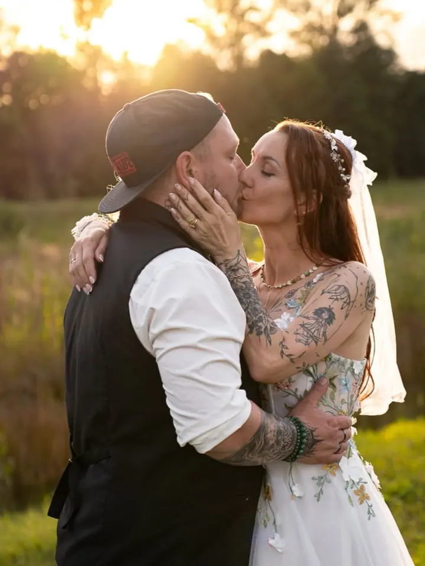
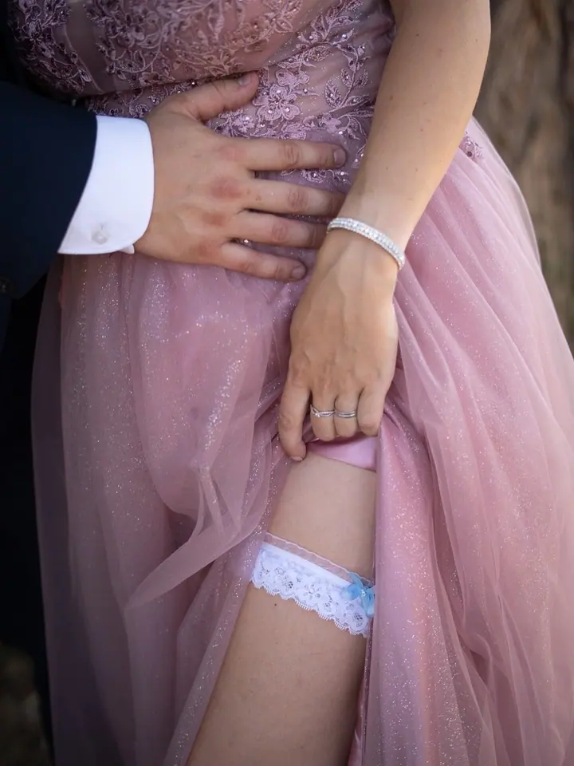
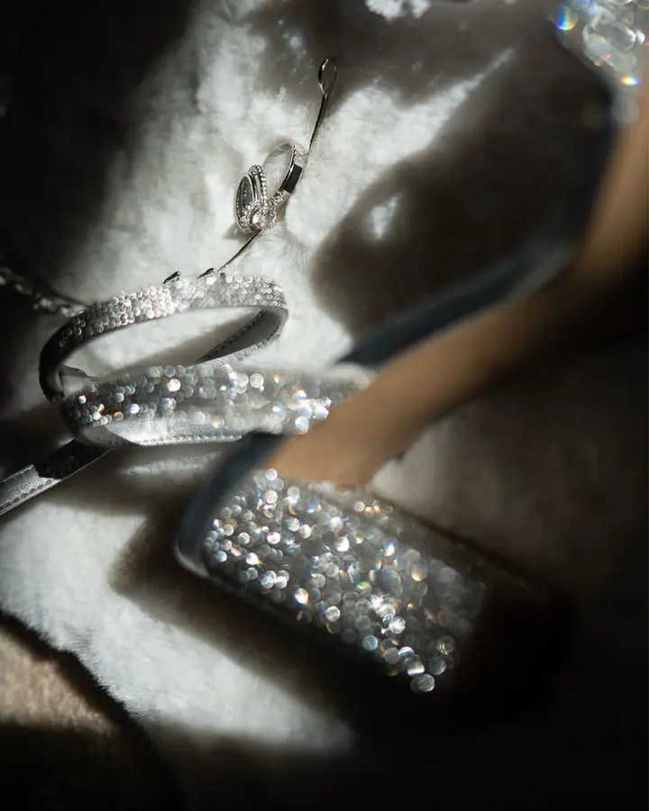

jedna
Svatby
Fotím vaši lásku ve všech podobách a svatební den k tomu patří. Přirozeně, uvolněně a s citem pro detaily, které by jinak zapadly.

Svatební a rodinná fotografka · Frýdek-Místek a okolí, ateliér na Malém Koloredově, po domluvě i jiná města

Jmenuji se Pavla Rosypalová a fotím vaši lásku ve všech podobách, od svatby přes těhotenství až po rodinu s dětmi. Ve Frýdku-Místku a okolí fotím venku v přírodě, u vás doma nebo v ateliéru, vždy přirozeně a uvolněně.
Více o mně
Co fotím
jedna
Fotím vaši lásku ve všech podobách a svatební den k tomu patří. Přirozeně, uvolněně a s citem pro detaily, které by jinak zapadly.
dvě
Těhotenské portréty plné jemnosti a očekávání. Klidné focení bez spěchu, kde nemusíte nic hrát ani předstírat.
Autentické fotky plné radosti, doteků a smíchu. Venku v přírodě, u vás doma nebo v ateliéru, tam, kde se cítíte dobře.
Pro podnikatelky, tvůrkyně a umělkyně. Fotky, které vystihnou vás i váš brand, a vizuál, který mluví za vás.
Stačí být spolu. O zbytek se postarám já.
Za objektivem
Od malička mě bavila krása v obyčejných věcech: světlo v okně, pohled mezi dětmi, pohyb rukou. Fotografování je pro mě forma meditace a radost z přítomného okamžiku. Znamená zastavit se a všímat si malých momentů, které v běžném shonu mizí.
Focení pro mě není jen práce. Je to setkávání s lidmi, poznávání jejich příběhů a zachycování toho, co mezi nimi opravdu je. Dávám přednost spontánnosti a přirozenosti před strojenými scénami a pomůžu vám uvolnit se a být sami sebou, v tichu, v pohybu nebo v smíchu.
Působím ve Frýdku-Místku a okolí, ale po domluvě ráda přijedu i jinam. Fotím venku v přírodě, u vás doma nebo u mě v ateliéru na Malém Koloredově. A jen pro pořádek: jsem Rosypalová, ne Rozsypalová.
Pavla
Na začátku si krátce napíšeme nebo zavoláme, abych poznala vaše představy a co byste si přáli zachytit.
Společně vybereme místo, kde se budete cítit dobře, venku, u vás doma nebo v ateliéru. Poradím vám i s oblečením a barvami.
Samotné focení je klidné a trvá přibližně 60 až 90 minut. Nejhezčí snímky vznikají, když jste sami sebou.
Z povedených snímků v přehledné online galerii si vyberete ty, které vás nejvíc osloví. Já je pečlivě upravím do jemných, přirozených tónů.
Portfolio
Otázky
Balíček MINI (30 až 45 minut, 5 upravených fotek) stojí 1 190 Kč, STANDARD (cca 60 minut, 10 fotek) 1 990 Kč a PREMIUM (až 2 hodiny, 30 až 40 fotek) 3 890 Kč. Každá další fotka nad rámec balíčku je za 150 Kč. Ceny jsou orientační a mohou se lišit podle rozsahu focení.
Ve Frýdku-Místku a okolí, venku v přírodě, u vás doma nebo v mém ateliéru na Malém Koloredově. Po domluvě ráda přijedu i do jiného města, dojezd mimo FM domluvíme individuálně.
Ráda vám poradím s barvami a kombinacemi, aby oblečení ladilo a zároveň působilo přirozeně.
Výběr z povedených snímků najdete v přehledné online galerii. Vybrané fotografie vám pečlivě upravím ve vysokém rozlišení a doporučím, jak je vytisknout a uchovat, aby vám dělaly radost i po letech.
Napište pár vět o tom, co si představujete. foto@pavlarosy.cz